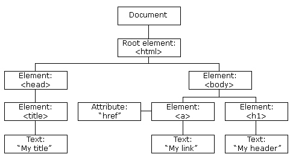
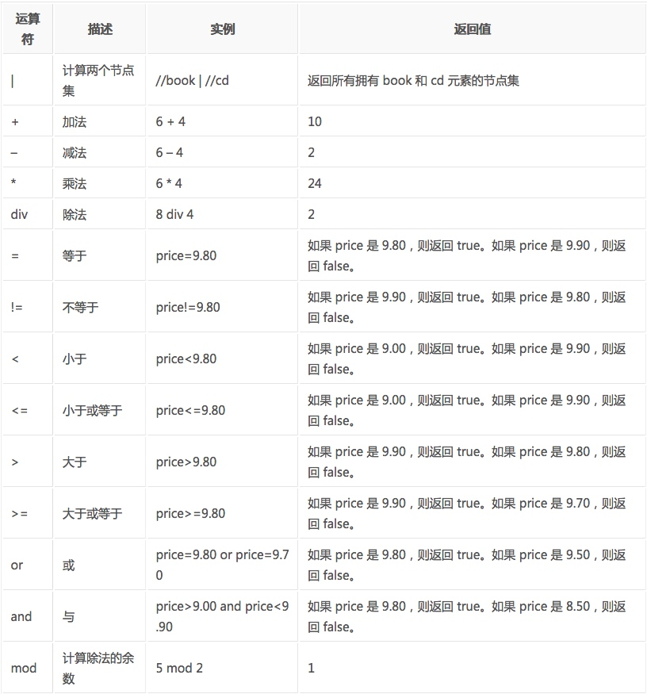

什么是XML
- XML 指可扩展标记语言（EXtensible Markup Language）
- XML 是一种标记语言，很类似 HTML
- XML 的设计宗旨是传输数据，而非显示数据
- XML 的标签需要我们自行定义。
- XML 被设计为具有自我描述性。
- XML 是 W3C 的推荐标准
W3School官方文档：http://www.w3school.com.cn/xml/index.asp
XML 和 HTML 的区别
| 数据格式 | 描述 | 设计目标 |
|---|---|---|
| XML | Extensible Markup Language （可扩展标记语言） |
被设计为传输和存储数据，其焦点是数据的内容。 |
| HTML | HyperText Markup Language （超文本标记语言） |
显示数据以及如何更好显示数据。 |
| HTML DOM | Document Object Model for HTML (文档对象模型) |
通过 HTML DOM，可以访问所有的 HTML 元素，连同它们所包含的文本和属性。可以对其中的内容进行修改和删除，同时也可以创建新的元素。 |
XML文档示例
<?xml version="1.0" encoding="utf-8"?>
<bookstore>
<book category="cooking">
<title lang="en">Everyday Italian</title>
<author>Giada De Laurentiis</author>
<year>2005</year>
<price>30.00</price>
</book>
<book category="children">
<title lang="en">Harry Potter</title>
<author>J K. Rowling</author>
<year>2005</year>
<price>29.99</price>
</book>
<book category="web">
<title lang="en">XQuery Kick Start</title>
<author>James McGovern</author>
<author>Per Bothner</author>
<author>Kurt Cagle</author>
<author>James Linn</author>
<author>Vaidyanathan Nagarajan</author>
<year>2003</year>
<price>49.99</price>
</book>
<book category="web" cover="paperback">
<title lang="en">Learning XML</title>
<author>Erik T. Ray</author>
<year>2003</year>
<price>39.95</price>
</book>
</bookstore>
HTML DOM 模型示例
HTML DOM 定义了访问和操作 HTML 文档的标准方法，以树结构方式表达 HTML 文档。

XML的节点关系
1. 父（Parent）
每个元素以及属性都有一个父。
下面是一个简单的XML例子中，book 元素是 title、author、year 以及 price 元素的父：
<?xml version="1.0" encoding="utf-8"?>
<book>
<title>Harry Potter</title>
<author>J K. Rowling</author>
<year>2005</year>
<price>29.99</price>
</book>
2. 子（Children）
元素节点可有零个、一个或多个子。
在下面的例子中，title、author、year 以及 price 元素都是 book 元素的子：
<?xml version="1.0" encoding="utf-8"?>
<book>
<title>Harry Potter</title>
<author>J K. Rowling</author>
<year>2005</year>
<price>29.99</price>
</book>
3. 同胞（Sibling）
拥有相同的父的节点
在下面的例子中，title、author、year 以及 price 元素都是同胞：
<?xml version="1.0" encoding="utf-8"?>
<book>
<title>Harry Potter</title>
<author>J K. Rowling</author>
<year>2005</year>
<price>29.99</price>
</book>
4. 先辈（Ancestor）
某节点的父、父的父，等等。
在下面的例子中，title 元素的先辈是 book 元素和 bookstore 元素：
<?xml version="1.0" encoding="utf-8"?>
<bookstore>
<book>
<title>Harry Potter</title>
<author>J K. Rowling</author>
<year>2005</year>
<price>29.99</price>
</book>
</bookstore>
5. 后代（Descendant）
某个节点的子，子的子，等等。
在下面的例子中，bookstore 的后代是 book、title、author、year 以及 price 元素：
<?xml version="1.0" encoding="utf-8"?>
<bookstore>
<book>
<title>Harry Potter</title>
<author>J K. Rowling</author>
<year>2005</year>
<price>29.99</price>
</book>
</bookstore>
什么是XPath？
XPath (XML Path Language) 是一门在 XML 文档中查找信息的语言，可用来在 XML 文档中对元素和属性进行遍历。
W3School官方文档：http://www.w3school.com.cn/xpath/index.asp
XPath 开发工具
- 开源的XPath表达式编辑工具:XMLQuire(XML格式文件可用)
- Chrome插件 XPath Helper
- Firefox插件 XPath Checker
选取节点
XPath 使用路径表达式来选取 XML 文档中的节点或者节点集。这些路径表达式和我们在常规的电脑文件系统中看到的表达式非常相似。
下面列出了最常用的路径表达式：
| 表达式 | 描述 |
|---|---|
| nodename | 选取此节点的所有子节点。 |
| / | 从根节点选取。 |
| // | 从匹配选择的当前节点选择文档中的节点，而不考虑它们的位置。 |
| . | 选取当前节点。 |
| .. | 选取当前节点的父节点。 |
| @ | 选取属性。 |
在下面的表格中，我们已列出了一些路径表达式以及表达式的结果：
| 路径表达式 | 结果 | |
|---|---|---|
| bookstore | 选取 bookstore 元素的所有子节点。 | |
| /bookstore | 选取根元素 bookstore。注释：假如路径起始于正斜杠( / )，则此路径始终代表到某元素的绝对路径！ | |
| bookstore/book | 选取属于 bookstore 的子元素的所有 book 元素。 | |
| //book | 选取所有 book 子元素，而不管它们在文档中的位置。 | |
| bookstore//book | 选择属于 bookstore 元素的后代的所有 book 元素，而不管它们位于 bookstore 之下的什么位置。 | |
| //@lang | 选取名为 lang 的所有属性。 |
谓语（Predicates）
谓语用来查找某个特定的节点或者包含某个指定的值的节点，被嵌在方括号中。
在下面的表格中，我们列出了带有谓语的一些路径表达式，以及表达式的结果：
| 路径表达式 | 结果 |
|---|---|
| /bookstore/book[1] | 选取属于 bookstore 子元素的第一个 book 元素。 |
| /bookstore/book[last()] | 选取属于 bookstore 子元素的最后一个 book 元素。 |
| /bookstore/book[last()-1] | 选取属于 bookstore 子元素的倒数第二个 book 元素。 |
| /bookstore/book[position()35.00] | 选取 bookstore 元素的所有 book 元素，且其中的 price 元素的值须大于 35.00。 |
| /bookstore/book[price>35.00]/title | 选取 bookstore 元素中的 book 元素的所有 title 元素，且其中的 price 元素的值须大于 35.00。 |
选取未知节点
XPath 通配符可用来选取未知的 XML 元素。
| 通配符 | 描述 |
|---|---|
| * | 匹配任何元素节点。 |
| @* | 匹配任何属性节点。 |
| node() | 匹配任何类型的节点。 |
在下面的表格中，我们列出了一些路径表达式，以及这些表达式的结果：
| 路径表达式 | 结果 |
|---|---|
| /bookstore/* | 选取 bookstore 元素的所有子元素。 |
| //* | 选取文档中的所有元素。 |
| //title[@*] | 选取所有带有属性的 title 元素。 |
选取若干路径
通过在路径表达式中使用“|”运算符，您可以选取若干个路径。
实例
在下面的表格中，我们列出了一些路径表达式，以及这些表达式的结果：
| 路径表达式 | 结果 |
|---|---|
| //book/title | //book/price |
| //title | //price |
| /bookstore/book/title | //price |
XPath的运算符
下面列出了可用在 XPath 表达式中的运算符：

这些就是XPath的语法内容，在运用到Python抓取时要先转换为xml。
lxml库
lxml 是 一个HTML/XML的解析器，主要的功能是如何解析和提取 HTML/XML 数据。
lxml和正则一样，也是用 C 实现的，是一款高性能的 Python HTML/XML 解析器，我们可以利用之前学习的XPath语法，来快速的定位特定元素以及节点信息。
lxml python 官方文档：http://lxml.de/index.html
需要安装C语言库，可使用 pip 安装：
pip install lxml（或通过wheel方式安装）
初步使用
我们利用它来解析 HTML 代码，简单示例：
# lxml_test.py
# 使用 lxml 的 etree 库
from lxml import etree
text = '''
<div>
<ul>
<li class="item-0"><a href="link1.html">first item</a></li>
<li class="item-1"><a href="link2.html">second item</a></li>
<li class="item-inactive"><a href="link3.html">third item</a></li>
<li class="item-1"><a href="link4.html">fourth item</a></li>
<li class="item-0"><a href="link5.html">fifth item</a> # 注意，此处缺少一个 </li> 闭合标签
</ul>
</div>
'''
#利用etree.HTML，将字符串解析为HTML文档
html = etree.HTML(text)
# 按字符串序列化HTML文档
result = etree.tostring(html)
print(result)
输出结果：
<html><body>
<div>
<ul>
<li class="item-0"><a href="link1.html">first item</a></li>
<li class="item-1"><a href="link2.html">second item</a></li>
<li class="item-inactive"><a href="link3.html">third item</a></li>
<li class="item-1"><a href="link4.html">fourth item</a></li>
<li class="item-0"><a href="link5.html">fifth item</a></li>
</ul>
</div>
</body></html>
lxml 可以自动修正 html 代码，例子里不仅补全了 li 标签，还添加了 body，html 标签。
文件读取：
除了直接读取字符串，lxml还支持从文件里读取内容。我们新建一个hello.html文件：
<!-- hello.html -->
<div>
<ul>
<li class="item-0"><a href="link1.html">first item</a></li>
<li class="item-1"><a href="link2.html">second item</a></li>
<li class="item-inactive"><a href="link3.html"><span class="bold">third item</span></a></li>
<li class="item-1"><a href="link4.html">fourth item</a></li>
<li class="item-0"><a href="link5.html">fifth item</a></li>
</ul>
</div>
再利用 etree.parse() 方法来读取文件。
# lxml_parse.py
from lxml import etree
# 读取外部文件 hello.html
html = etree.parse('./hello.html')
result = etree.tostring(html, pretty_print=True)
print(result)
输出结果与之前相同：
<html><body>
<div>
<ul>
<li class="item-0"><a href="link1.html">first item</a></li>
<li class="item-1"><a href="link2.html">second item</a></li>
<li class="item-inactive"><a href="link3.html">third item</a></li>
<li class="item-1"><a href="link4.html">fourth item</a></li>
<li class="item-0"><a href="link5.html">fifth item</a></li>
</ul>
</div>
</body></html>
XPath实例测试
1. 获取所有的 <li> 标签
# xpath_li.py
from lxml import etree
html = etree.parse('hello.html')
print type(html) # 显示etree.parse() 返回类型
result = html.xpath('//li')
print result # 打印<li>标签的元素集合
print len(result)
print type(result)
print type(result[0])
输出结果：
<type 'lxml.etree._ElementTree'>
[<Element li at 0x1014e0e18>, <Element li at 0x1014e0ef0>, <Element li at 0x1014e0f38>, <Element li at 0x1014e0f80>, <Element li at 0x1014e0fc8>]
5
<type 'list'>
<type 'lxml.etree._Element'>
2. 继续获取<li> 标签的所有 class属性
# xpath_li.py
from lxml import etree
html = etree.parse('hello.html')
result = html.xpath('//li/@class')
print result
运行结果
['item-0', 'item-1', 'item-inactive', 'item-1', 'item-0']
3. 继续获取<li>标签下hre 为 link1.html 的 <a> 标签
# xpath_li.py
from lxml import etree
html = etree.parse('hello.html')
result = html.xpath('//li/a[@href="link1.html"]')
print result
运行结果
[<Element a at 0x10ffaae18>]
4. 获取<li> 标签下的所有 <span> 标签
# xpath_li.py
from lxml import etree
html = etree.parse('hello.html')
#result = html.xpath('//li/span')
#注意这么写是不对的：
#因为 / 是用来获取子元素的，而 <span> 并不是 <li> 的子元素，所以，要用双斜杠
result = html.xpath('//li//span')
print result
运行结果
[<Element span at 0x10d698e18>]
5. 获取 <li> 标签下的<a>标签里的所有 class
# xpath_li.py
from lxml import etree
html = etree.parse('hello.html')
result = html.xpath('//li/a//@class')
print result
运行结果
['blod']
6. 获取最后一个 <li> 的 <a> 的 href
# xpath_li.py
from lxml import etree
html = etree.parse('hello.html')
result = html.xpath('//li[last()]/a/@href')
# 谓语 [last()] 可以找到最后一个元素
print result
运行结果
['link5.html']
7. 获取倒数第二个元素的内容
# xpath_li.py
from lxml import etree
html = etree.parse('hello.html')
result = html.xpath('//li[last()-1]/a')
# text 方法可以获取元素内容
print result[0].text
运行结果
fourth item
8. 获取 class 值为 bold 的标签名
# xpath_li.py
from lxml import etree
html = etree.parse('hello.html')
result = html.xpath('//*[@class="bold"]')
# tag方法可以获取标签名
print result[0].tag
运行结果
span